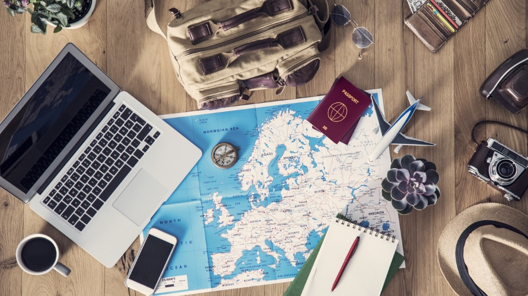
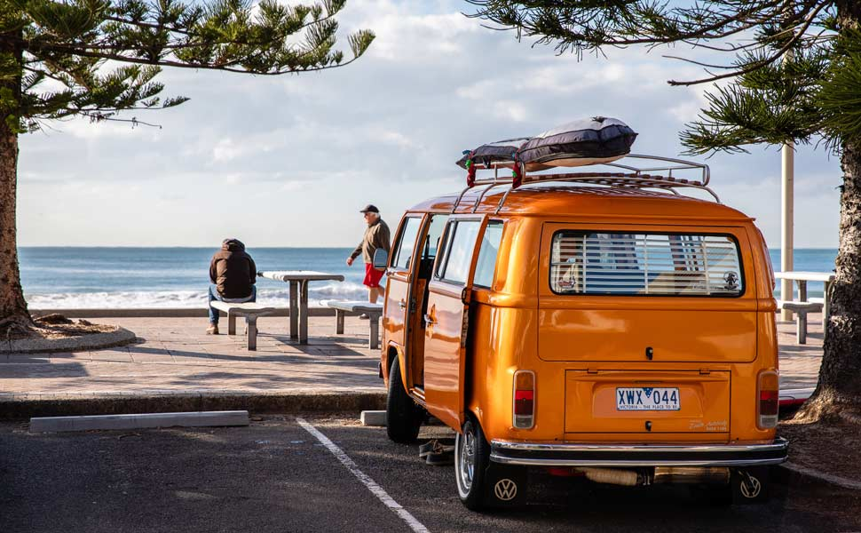
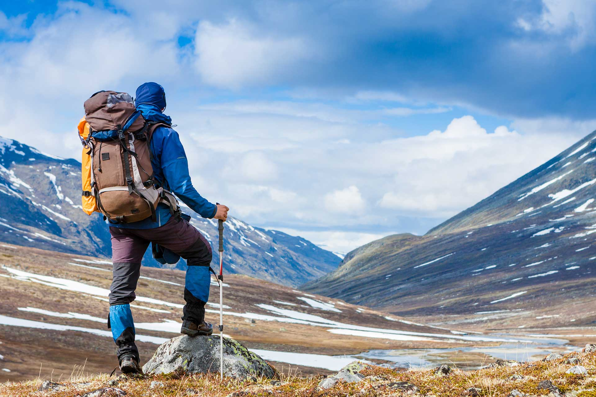

Work and Travel = Cultural Exchange
Work and Travel is the popular name for the largest group of cultural exchange programs organized in the United States under the supervision of the Department of State. The most widely known Work and Travel program is Camp America, a program designed especially for people going to the US for the first time. It has been organized for 50 years by the American Institute of Foreign Studies. Like any Work and Travel program, Camp America is an opportunity for cultural exchange between participants and those coming to the camp, including American and international camp staff. This takes place during joint work, sports and recreational activities. Work and Travel also gives you the opportunity to get to know the everyday life of US residents.

What is Work and Travel?
Work and Travel is the organization of cultural exchange combining holidays with the possibility of legal work. Thousands of students from thousands of countries around the world take part in it. The program is based on a J-1 visa. This is called Exchange visitor visa - a visa for a participant in a cultural exchange program. It is not a work, student or tourist visa, but thanks to it, it is possible to work in the USA for summer work for students and people who want to work with young people as educators or sports instructors. The popularity of Work and Travel programs, and Camp America in particular, lies not only in the fact that they make it possible to vacation and work in the USA and travel around America.

You don't worry about anything!
In the "safe version of work and travel", as some people call Camp America, the participant remains under the care of the organizer from the moment of registering in Poland until the end of participation in the program. Free flight, airport pickup, camp site, pocket money, free living and dining are guaranteed by a contract concluded directly with Camp America. Therefore, the low own contribution means that the financial risk on the part of the Participant is practically non-existent. The participant is also provided with a double "Orientation", that is, a special training on participation in the program: before departure from country and upon arrival at the camp. The program oversees the American Institute of Foreign Studies and provides Camp America funding for full-service attendee support.
Work and… Travel!
After finishing work at the camp, it's time to travel. You get pocket money and you already know how to get around America. So you feel more confident and you have many new friends with whom you can explore the USA and make your truest "American dream" come true. Hello Adventure!|  |  |
Welcome to USA